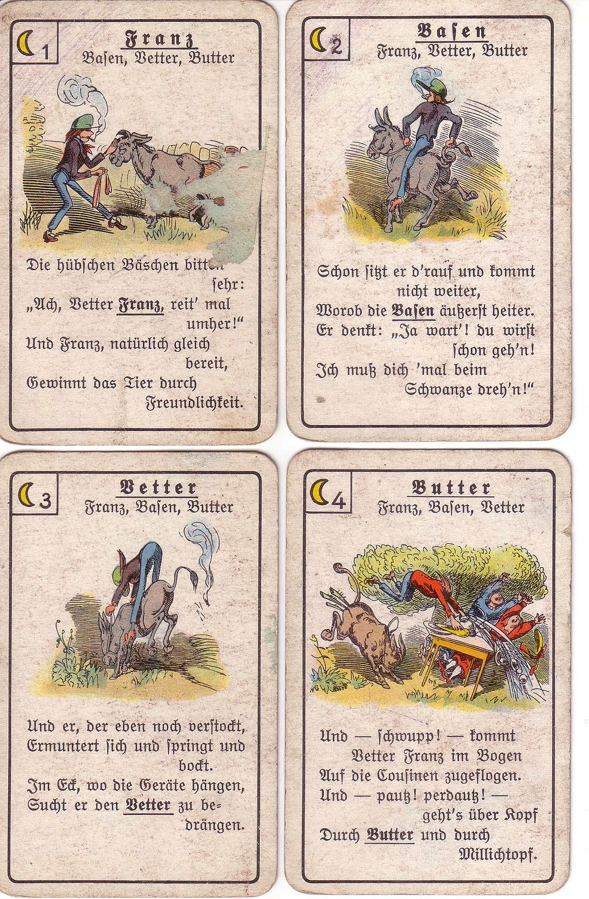

46th ICPC World Championship · Problem X
You are watching a group of kids playing a friendly game of Quartets and having fun. At one moment, you started being suspicious that some of the kids may be cheating. It seems the kids themselves are not bothered by that at all. Quite the contrary, this brings them even more fun, especially when someone gets caught cheating. As a programmer, you immediately started to think about ways to detect cheating by just observing their game.
Quartets is a 4-player card game that uses a deck of 32 cards divided into 8 sets of 4 cards each. Actual cards often contain educational images, which helps players to learn not only individual objects but also their classification. For example, the cards may display animals while the sets correspond to various groups of animals (mammals, reptiles, etc.).
At the beginning of a Quartets game, every player is dealt 8 cards and player 1 starts their turn. In each turn, a player asks another player whether they have one particular card. If the asked player has that card, they must give it to the requester, and the requester continues their turn by asking any of the players for another card. If the asked player does not possess the requested card, the requesting player loses the turn and the asked player starts their turn. An important rule states that the requesting player must already have at least one card from the same set as the card they ask for.

If, during their turn, a player holds a full set (“quartet”) in their hand, the player may show the quartet to the other players, put it aside and gain one point. The four cards of the quartet are permanently removed from the current game. If at any point a player has no cards left, that player leaves the game. If it was that player’s turn, the turn passes to the next player in sequence (player 1-2-3-4-1-…) who still has any cards. If no players have any cards, the game ends and the player with the most points is declared the winner.
Players are not allowed to ask for cards that have been removed from the game, and they cannot ask for a card from a player who has left the game.
Cheating in the game of Quartets is conceivable in two situations where a player falsely claims to have (or not have) some card. Specifically, the cheating occurs if
Needless to say, cheating is often discovered later. Theoretically, a watchful opponent can eventually find out about any cheating, as all cards are finally revealed at some point before the game ends. Note that asking for a card that the asked player cannot possibly have (for example, because the requester has it in their own hand) is not exactly a smart move but is not considered cheating by itself.
The first line of input contains an integer n (1 ≤ n ≤ 1000), the number of consecutive actions in one game of Quartets, starting from the beginning of a game. The next n lines each contain a description of an action. Each action is described by one line and may be one of the following:
In all actions, x and y (1 ≤ x, y ≤ 4, x ≠ y) are integers denoting the players, s (1 ≤ s ≤ 8) is a one-digit integer corresponding to one of the sets/quartets, and k ∈ {A, B, C, D} is a character identifying the four cards within a set. Thus the cards sk are labeled 1A, 1B, 1C, 1D, 2A, 2B, …, 8C, 8D. The four cards that share the same first digit form a single set.
The given sequence describes a valid game being played among 4 players. That is, except for the two possible ways of cheating mentioned above, all actions satisfy all the rules.
If there is a possible initial distribution of the cards such that the sequence of actions corresponds to a (possibly partial) game with all players following the rules, output yes. Otherwise, output no, followed by a line giving the number of the first action after which it is certain that some player must have cheated. Actions are numbered sequentially starting with 1, the actions of putting quartets aside are also counted.
Players 1 and 2 both claim not having 3C, and neither of them had 3A or 3D. So one of them either lied about not having 3C, or asked for 3C without having 3B (the only remaining card from set 3).
4 1 A 2 3C no 2 A 3 3A yes 2 A 4 3D yes 2 A 1 3C no
no 4
6 1 A 2 3C no 2 A 3 3A yes 2 A 4 3D yes 2 A 1 3B no 1 A 4 5B yes 1 Q 5
yes